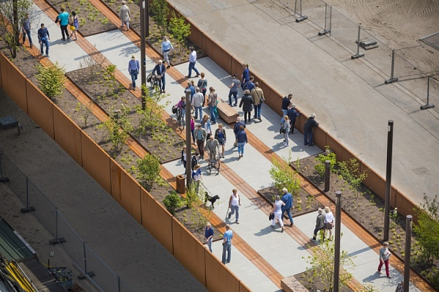
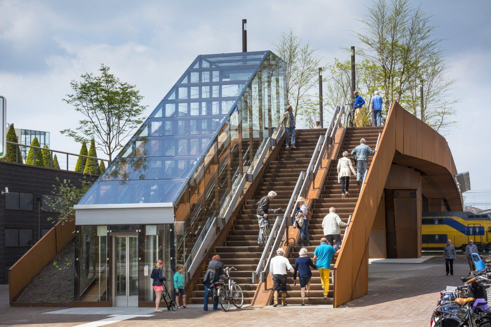
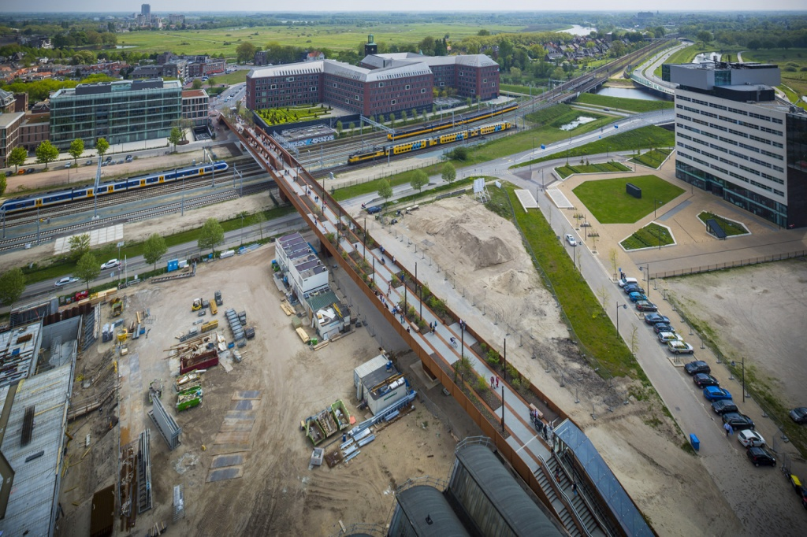

В Нідерландах створили екоміст, що генерує енергію для навколишніх будинків
Сучасні архітектурні новинки можуть бути не лише красивими та функціональними, а й екологічно відповідальними. Навіть звичайний проект з будівництва пішохідного мосту здатен зробити свій вклад у збереження оточуючого середовища.
Такий приклад нещодавно представила нідерландська архітектурна компанія Benthem Crouwel Architects, що запустила в експлуатацію міст для пішоходів і велосипедистів протяжністю 250 метрів у місті Гертогенбос (південь Нідерландів). Новобудова оснащена великим сонячним колектором, який генерує електрику для живлення навколишніх будинків
Відкриті прольоти мосту об'єднані з захищеними від негоди сталевими панелями і включають горизонтальні погодостійкого сталеві тунелі, покриті шаром бетону. Найбільший тунель, довжиною 51 метрів, проходить над залізничними коліями і має додаткові вузли для забезпечення структурної цілісності мосту. Весь проліт розділений на чотири двометрові смуги для пішоходів і велосипедистів.
За задумом розробників, усі задіяні у будівництві матеріали (включаючи систему освітлення та паркові меблі) – екологічно безпечні та мають термін служби не менше 100 років.
Крім того, квітники та сади, разом зі світлодіодним освітленням і зручними парковими лавками створюють нову екосистему, яка гармонує з навколишнім ландшафтом.
А великий сонячний колектор, встановлений на мосту, підключений до блоку акумулювання тепла/холоду, який не тільки постачає електроенергію для навколишніх районів, а й забезпечує підігрів мостового настилу по всій довжині конструкції.
|